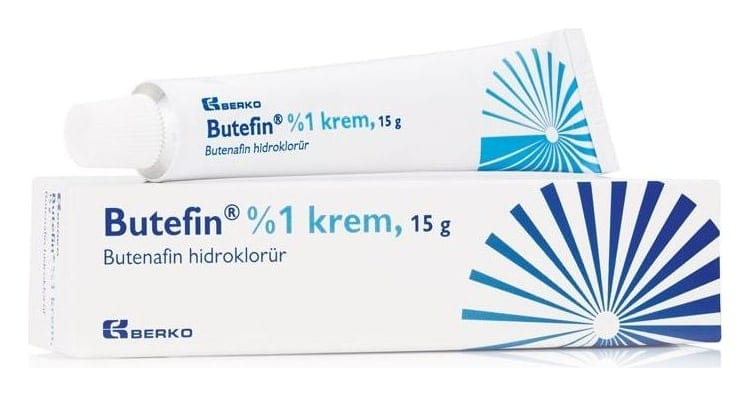

Butefin %1 Krem, 15 g

Ne için kullanılır
KT · Bölüm 1• BUTEFİN; 15 g ve 30 g’lık aluminyum tüplerde pazarlanan, butenafin hidroklorür içeren ve sadece haricen kullanılan bir kremdir.
• BUTEFİN, ciltte bir çeşit mantar sebebi ile oluşan sarımsı kahve veya kahverengi döküntülerin (tinea versicolor), vücut mantarı (tinea corporis), ayak mantarı (interdigital tinea pedis), kasık mantarının (tinea cruris) haricen (topikal) tedavisinde kullanılır.